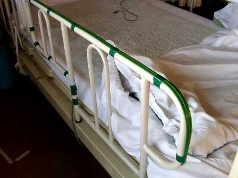

第１８回リハ工学カンファレンス予稿集原稿より
富山県高志リハビリ病院における離床検知通報システム
Development of Wonder Alert System in Toyama Pref. KOSHI Rehab. Hosp.富山県高志リハビリ病院研究開発部臨床リハ工学サービス科
大島 淳一キーワード：安全，離床，検知，月ヶ瀬離床センサ，テープスイッチ型離床センサ
１． はじめに
身体に麻痺などがあり，安全な歩行ができない方には，転倒事故を防ぐため，ベッドから離れる際にはナースコールを押して看護師を呼ぶように指導が行われている．しかし認知障害などのため，これが守れず単独で離床，転倒し，骨折など重大な結果となる例もある．
この対策として提案された，洗濯ばさみを利用した離床センサ１）を当院で製作したところ，一定の効果を収めることができた．さらに病棟での使用を通じ，この離床センサ（月ヶ瀬離床センサと命名）の製作方法や使用方法にいくつかの改善点と限界を見いだすことができた．今回はこれらの項目と，月ヶ瀬離床センサの欠点を補うために開発した，テープスイッチ型離床センサについて発表する．２． 月ヶ瀬離床センサ
月ヶ瀬離床センサは，図１のように洗濯ばさみの先端につけた電極の間に樹脂のタグを挟み，このタグを引き抜くと電極が短絡し，ナースコールが作動する仕組みである．基本的な使用方法のひとつを図２に示す．まずベッドのフレームに洗濯ばさみ部分をひもでしばり，ベッド柵に適切な長さのひもでタグを取り付ける．ベッド柵を引き抜くとタグが外れ，ナースコールが作動する．このほか衣服に挟み，体動により作動させる使用方法もある．当院では，ナースコールにより部屋番号とベッド番号がPHSに表示されるシステムを使用しているので，一般のコールと区別して対応が可能である．
当初は試行錯誤で製作し，故障も少なくなかったが，次第に製作上の改善点も明らかになってきた．
①電極材料に銅を使用すると接点の導通不良が少なくなる．②洗濯ばさみ末端の両方を水糸などの輪でつなぎ，これに配線やベッド固定用のひもなどをつけると，洗濯ばさみの破損が減る．③ボール紙などで作ったダミータグをつけると，看護作業などの際に不必要な作動を防げる．④雄雌のコネクタを用い数珠つなぎ（デイジーチェーン）可能にすると，複数の離床センサを同時に使用できる．等である．図１ 月ヶ瀬離床センサの原理
図２ 月ヶ瀬離床センサをベッド柵につけた例
（ベッド下に隠れるようにつけるのが望ましい）取り付け方法についても様々な工夫を行った．例えば，月ヶ瀬離床センサの取り付けには，３mmの金剛打綿ロープを使い，本結びにすると，外されることがほとんどなくなった．また，月ヶ瀬離床センサの洗濯ばさみ部分が見えないようにつけると存在に気づかれることも少なくなる．さらに取り付け作業は，対象となる方に観察されないために不在の時に行うようにしている．どのような方に対しても，離床センサの存在を極力悟られないことが重要と考える．
使用方法はいくつかある．前述したベッド柵につける方法は，当院で最も頻繁に行われている．このほか，トイレの便座の後ろにつけ衣服を挟めば，立上がり動作でナースコールを作動させることもできる．これにより看護師が個室から出られる場合も増えた．
本来なら月ヶ瀬離床センサ導入前後の転倒事故件数を比較検討する必要があるが，病棟組織改変の時期と重なり入院患者が重症化したため意味のある比較は期待できない．しかし病棟スタッフの意見は概ね好評である．
単純な構造の月ヶ瀬離床センサを導入し，当初予想しなかった利点があった．まず一般に機械モノが苦手な病棟スタッフが破損を見つけられるため，故障品を知らずに使い続けることがない．家族に説明する際にも理解を得やすい．そしてコストが低いため，数量の確保が容易であったことなどである．３．テープスイッチ型離床センサ
ベッドから下りるときにベッド柵を引き抜く方の場合，月ヶ瀬離床センサでこれを検知し通報できるが，中には一気にベッド柵をまたぎ越えようとする方もいる．
この問題に対して，テープスイッチをベッド柵に取り付けた離床センサを製作した．テープスイッチとは，細長い柔軟なテープ状をしており，そこに一定以上の力をかけると動作するスイッチで，防犯や工場設備などの安全対策に広く使用されている．寸法などの形状や動作力が異なる何種類かの製品が市販されている．
図３ テープスイッチ型離床センサを
ベッド柵に取り付けた例テープスイッチジャパン社の121-BPをベッド柵に粘着テープで貼り付けた試作品を図３に示す．これを実際に試したところ，布団など寝具が乗っても作動せず，柵に手をかけある程度力をかけると作動し，離床センサとして有効に機能することがわかった．またベッドのフットプレート上面に貼り付けても利用できる．
一方，ベッド柵に手をかけ体を起こす動作でもナースコールが作動したり，病棟スタッフなどが誤って作動させることもあり，テープスイッチ型離床センサは誤報が多い．またベッド柵を抜く動作では作動しないため，月ヶ瀬離床センサとの併用を基本とし，主に入院したばかりで，行動を予測できない場合や，特に危険性が高いと判断された場合に使用している．
これによってベッド柵をまたぎ越そうとする危険な動作も検知し通報できるようになった．しかしテープスイッチ離床センサは色が目立つため，存在を怪しむ方もおられる．存在を悟られないようにする事がここでも重要で，今後の改善が必要と思われる．４． おわりに
当院では月ヶ瀬離床センサとテープスイッチ型離床センサによって，離床をほとんど検知通報できるようになった．しかし転倒事故防止のためには根本的に病棟スタッフの努力が不可欠で，これらの道具も補助的な役割しか果たし得ない．機器を導入すればそれで問題解決できるわけではないことを忘れてはいけない．大切なことは道具を理解し使いこなすこと．使いこなせる道具を作ることと思われる．
最後に各種離床センサの開発に際して，ご協力をいただいた当院のスタッフ，並びに機器の欠点を実際の行動で教えていただきました当院の入院患者様に，深謝いたします．参考文献
1)富田豊：福祉機器コンテスト'99，p34，1999参考URL
富山県高志リハビリ病院研究開発部臨床リハ工学サービス科：http://www.koshi-rehabili.or.jp/kenkyu/serviceka/index.html（以下のＵＲＬに変更になりました）
http://www.koshi-rehabili.or.jp/data/kakuka/kenkyu_kaihatu/kenkyu/serviceka/indexs.html
テープスイッチジャパン：
http://www.tsjapan.co.jp/